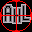
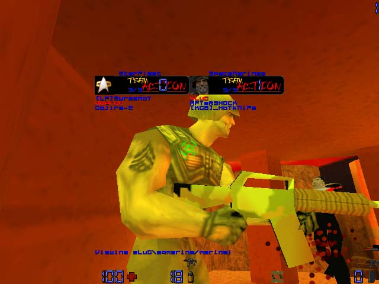
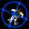
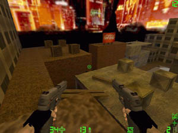
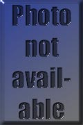
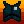
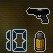

PICTURE
|
AUTHOR - DATE POSTED |
 |
[-AMDG-]
new console look |
 |
[HK]
console characters |
 |
Phixius - 09.26.99
[CLICK
TO DOWNLOAD] AHL windows icon. |
 |
Sureshot - 09.26.99
[CLICK
TO DOWNLOAD] In game AQ2 icon pak |
 |
SGT Sneaky - 08.09.99
[CLICK
TO DOWNLOAD] AHL windows icon. |
 |
Ryan Corey - 07.30.99
[CLICK
TO DOWNLOAD] This is a Aq2 icon
replacement (weapons,items,crosshairs,& console) based on the HUD systems used in
military aircraft. |
 |
^V^7ths0n^'s - 04.02.99
[CLICK
TO DOWNLOAD] Heres some more in-game
weapons icons! |
 |
Shinobi - 03.17.99
[CLICK
TO DOWNLOAD] This file isn't called
ActionFaceLift for nothin! It includes console tags (or backgrounds for those of us who
are cluless), icons, fonts, and crosshairs for action quake. This Pic is just one of the
many in game icons for weapons and items that are included in it. |
 |
Devo - 03.17.99
[CLICK
TO DOWNLOAD] Yet another "Face
Lift" for action. This includes all new versions of everything in the the download
above. These Icons are a little easier on the eyes. |
|
p1n0yb0y - 03.17.99
[CLICK
TO DOWNLOAD] These are icons specifically
for the exe file in windows! |

{kind=link}
{kind=link}
{kind=link}
{kind=link}
{kind=link}
{kind=link}
{kind=link}